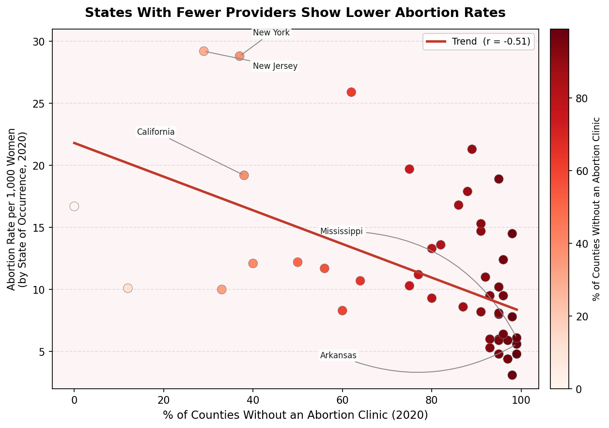
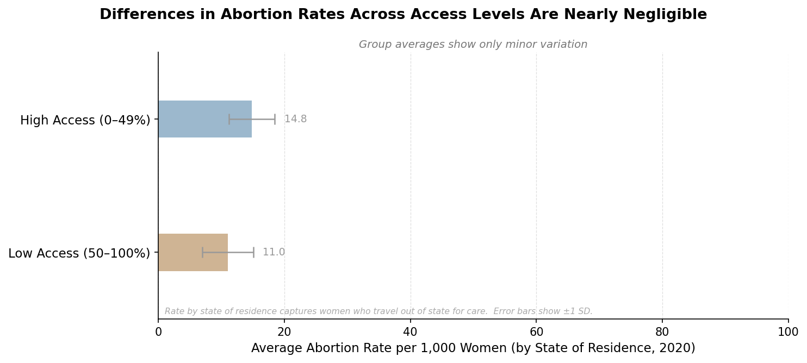

Proposition: "Limited access to abortion providers leads to lower abortion rates."
FOR the Proposition

Design Decisions and Rationale:
- Used "by occurrence" rate instead of "by residence" (Score: −2). This counts abortions where they happened, not where the patient lives. Women in restricted states often travel out of state for care, so those abortions get counted in the destination state instead. That makes restricted states look like they have way fewer abortions than they actually do. The residence rate would follow the patient and be more accurate, but the occurrence rate made the trend look sharper.
- Y-axis starts at 2, not 0 (Score: −1.5). Chopping the bottom off the axis makes the regression line look a lot steeper than it really is, as starting the scale at zero ended up making the slope look much flatter. Doing so, we aimed to strengthen the visual correlation of our proposition.
- Red color gradient for restriction level (Score: −1). The shading of red aims to pull the readers attention towards the bottom right (where the darked poitns are concentrated) following the slope downwards. In addition to this, it also draws attention towards the area of high concentration, where high restriction, low abortion points were densely concentrated.
- Only labeled the states that fit the story (Score: −1). We labeled Mississippi, Arkansas, New York, New Jersey, and California because they sit at the extreme ends of the trend. States like Nevada and Florida that have high restriction but moderate abortion rates got left as unlabeled dots. All the data is technically visible; we aimed to make it easier to ignore the exceptions.
- Dropped D.C. as an "outlier" (Score: −0.5). DC ends up as an upper‑left outlier because it has zero counties without a clinic and an abortion rate around 26, and as such, would pull the regression line flatter. Ultimately, we decided to use the fact that it could be argued that D.C. was not a state as justification for removing the point.
AGAINST the Proposition

Design Decisions and Rationale:
- Collapsed everything into just 2 groups (Score: −1.5). We saw a relationship (of r \approx -0.05), but decided to group the data into these two categories to hide that. As such, and using bar plots, we aimed to let readers interpret the difference, and with the inclusion of the whiskers, the lengths seemed to be relatively similar.
- X-axis goes to 100 when the data tops out at around 29 (Score: −1.5). The gap between the two group means is 3.8 units (14.8 vs. 11.0). On a 0 to 30 axis that looks meaningful, however, on a 0 to 100 axis the two bars are barely distinguishable visually.
- Error bars show ±1 SD instead of standard error (Score: −1.5). SD bars are wide enough to visually overlap, which makes the groups look like they are basically the same. But SD just describes the spread of individual state values. Standard error bars (roughly 1 to 2 units) would show the groups clearly separated. Using SD takes advantage of the similarly lengthed whiskers, aiming to convince the viewer that there is no real difference. We had initially considered the use of box-plots, as they contained whiskers, however, the difference in positions created a more obvious difference between the two groups, and as such, settled with the use of a bar chart, where only the difference in length was prevalent.
- Thin bars and washed-out colors (Score: −0.5). The bars are narrow on purpose and use a muted gray-blue and tan. Before anyone reads a number, the chart already feels like it is showing two nearly identical values. Having started with thicker bars and stronger colors, it made the difference stand out more to us visually.
- Dropped NJ, NY, and D.C. from the High Access group; Dropped the lowest-rate states from Low Access to push its mean up (Score: −2). These three have some of the highest abortion rates in the country. With them included, the High Access mean is 19.6, which is a pretty obvious gap. Removing them brings it down to 14.8. The reasoning that they are outliers or that DC is not a state is not completely false, but we made the call after seeing how much it changed the chart. Conversely, South Dakota (4.1), Utah (4.5), Nebraska (5.4), West Virginia (5.7), and Iowa (5.9) were removed from the Low Access group, done so under the notion that they were "outliers" for our low access group, the opposite of what we did to High Access, where we removed the high-rate states. Both removals push the two means closer together and shrink the gap from around 13 units down to 3.8, which is almost invisible on a 0 to 100 axis.
Final Reflection
Visualization 1 was pretty straightforward. The correlation is real (r ≈ −0.58), so we wimply had to pick the metrics that would make our visualization look stronger. To do so, we cut the y-axis, and labeled only the states that fit the proposal we were trying to convey. Visualization 2 was a lot harder. The pattern is statistically significant (p < 0.0001), so cosmetic changes were not going to be enough. We had to actually break the structure of the data by binning it, stretching the axis, and using SD error bars to make the groups look like they overlap. The most ethically questionable action was dropping outliers. Dropping the high-rate states from High Access and then dropping the low-rate states from Low Access is technically doing the same thing to both groups, but it is doing it in opposite directions specifically to bring the means together. Doing so, we essentially just kept the data that we wanted under the pretense of cleaning "outliers" from our data.
We were honestly surprised by how much the choice of metric matters. The occurrence rate and residence rate sound almost identical, however, they tell completely different stories when accounting for cross-state travel. Occurrence basically tracks where clinics are, not where patients come from, so our using of it to argue that restricted states have fewer abortions is likely to draw false conclusions. However, doing so made it harder to spot the difference compared to that of a truncated axis.
Our initial definition of ethical data visualization was pretty simple: don't lie with the data. However, as we started to plot our visualizations, we realized that it was quite difficult to show two opposing sides with simply the raw data. As such, we employed tactics, such as labeling specific points, cutting the y-axis, or dropping outliers, to try and sell two different perspectives. Now, we would like to say that our view on "ethical visualization" is the same, but it is difficult to pinpoint exactly where the difference between "misleading" and "persuasive" stands. While we do believe there to be cases where a choice is deliberately "misleading", the difference likely stems from whether or not the rational is convincing enough to a reader, meaning that it could be influenced by how that decision was presented and rationalized, and not just the decision itself.